- • 病人只能在營業時間打電話預約，LINE 普及率高達 90% 以上卻無法 24hr 自助
- • 病歷多為手動輸入，缺乏結構化與 AI 輔助，醫師耗時打字
- • 經營報表需手動拉取，缺乏即時儀表板與預測洞察
- • 庫存與效期管理依賴人工盯控，無用量預測與智能預警
- • 安生與伊萊資料各自獨立，跨院區同步困難
- • 療程追蹤與自動化關懷不足，病人流失風險高
- • 客訴與異常事件多靠 LINE 文字紀錄，缺乏系統化稽核軌跡
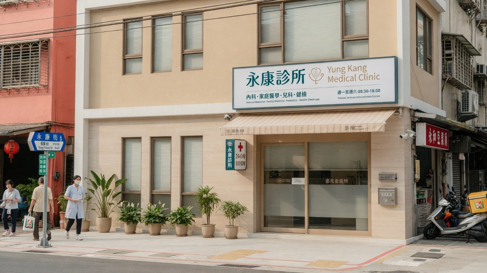
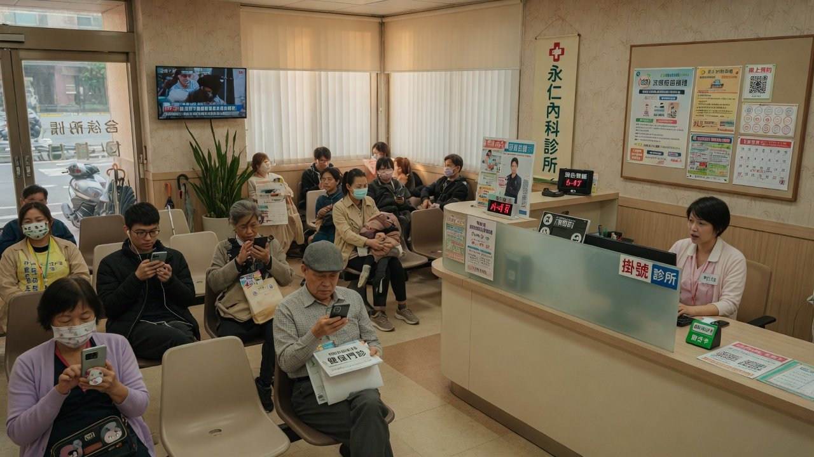
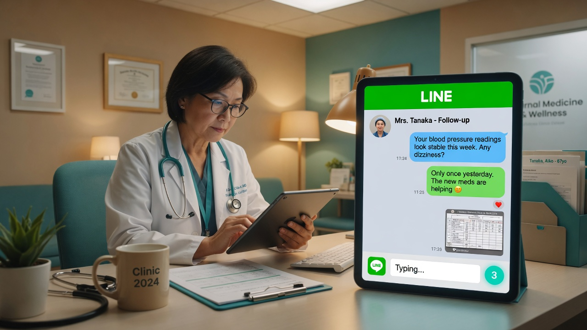
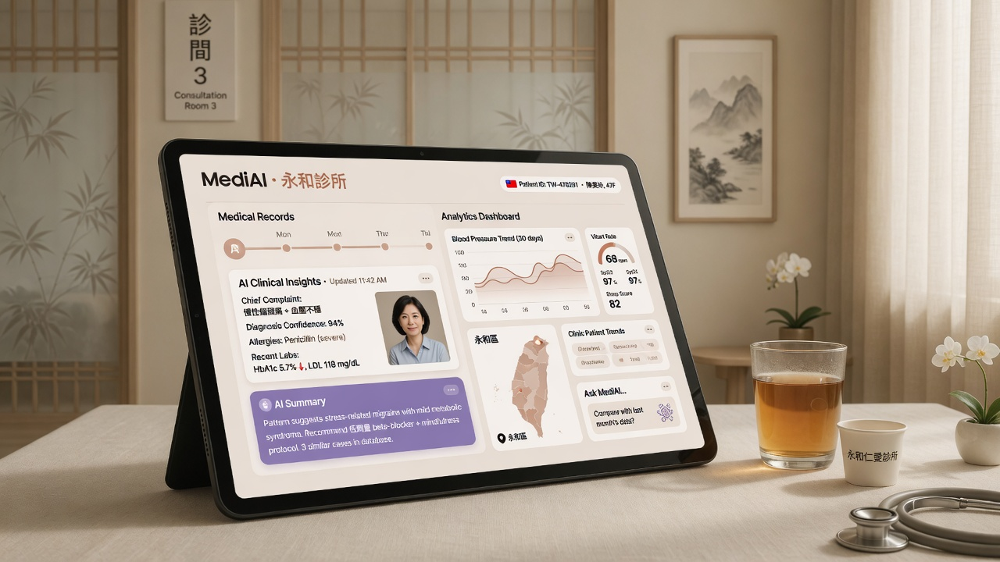
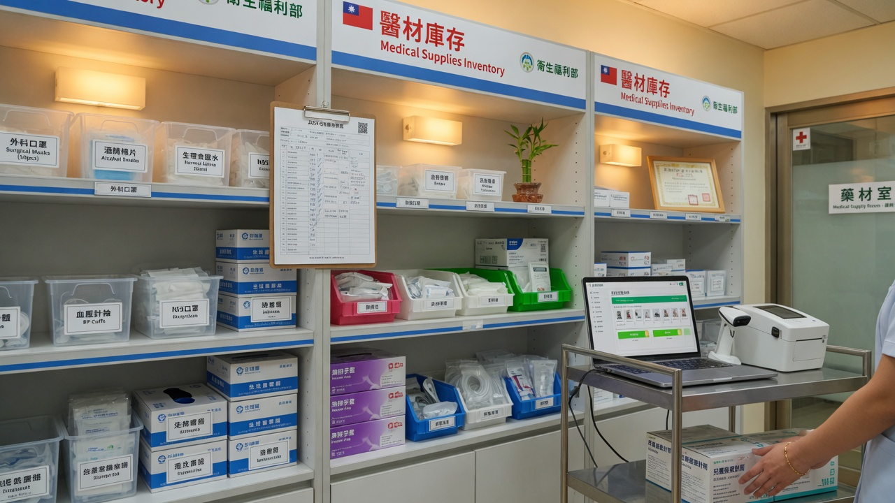
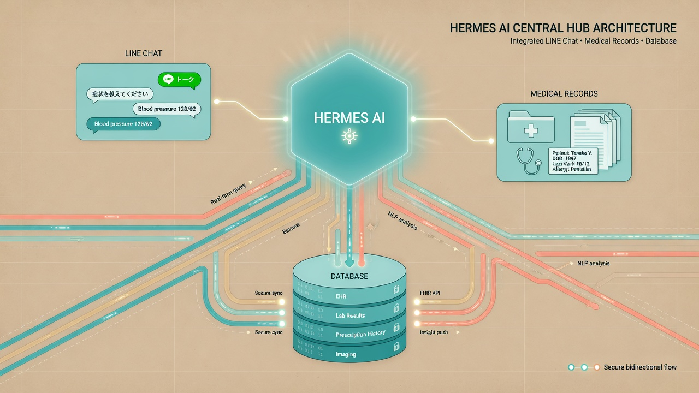
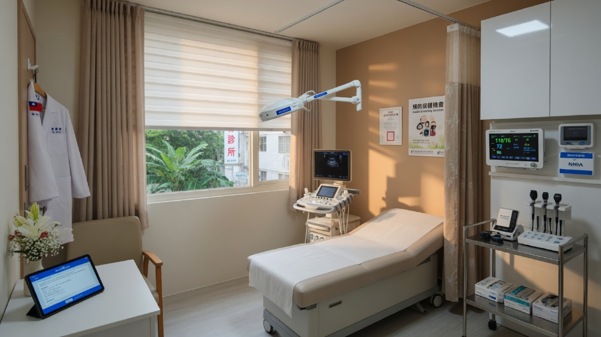
LINE 智慧客服上線 + 基本預約提醒。立即減少電話量 50% 以上。
AI 病歷助手、療程管理、經營儀表板上線。醫師效率與決策能力大幅提升。
多院區同步、庫存預警、CRM、事件追蹤全開。與耀聖完成深度 API 整合。
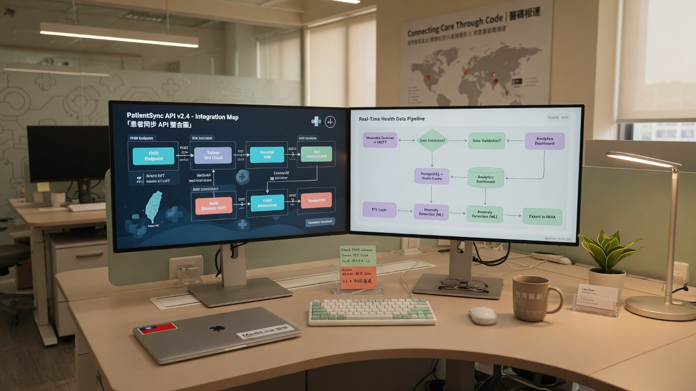
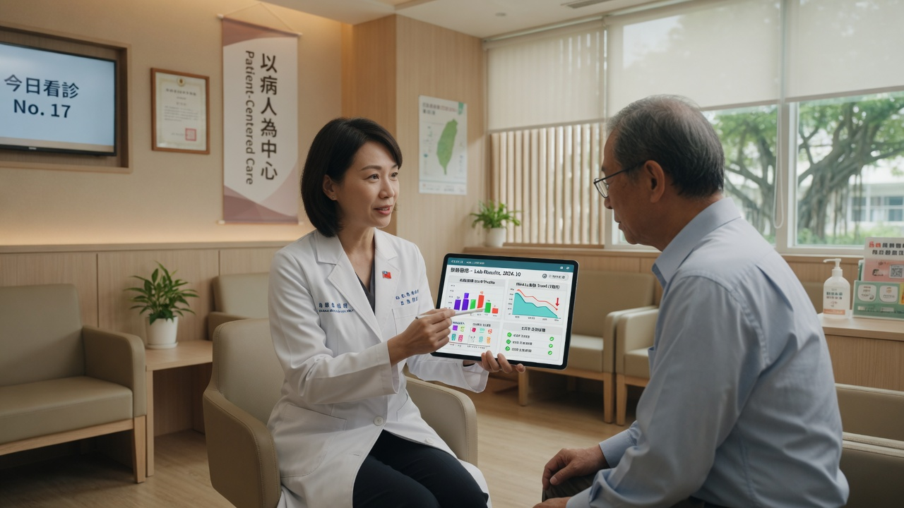
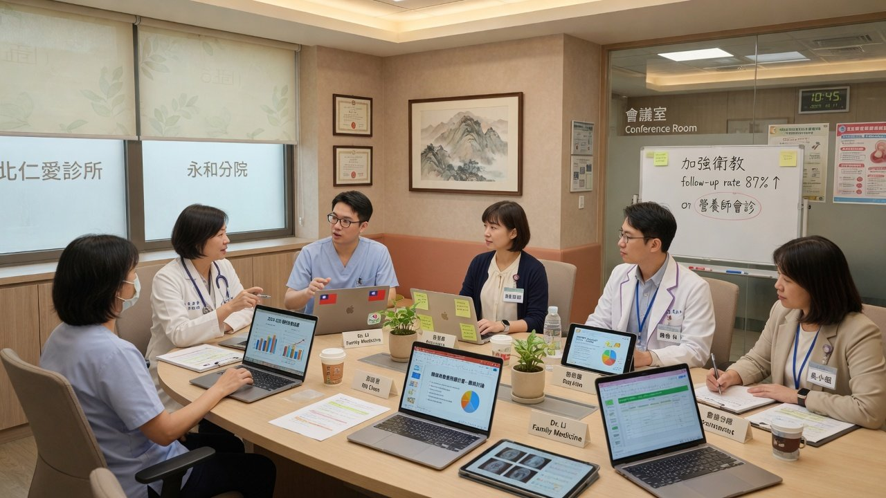
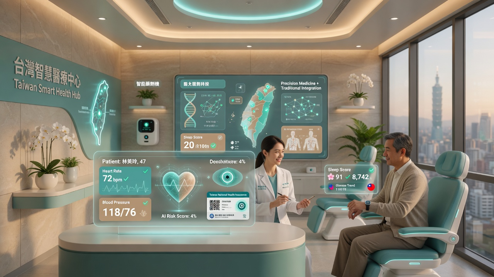
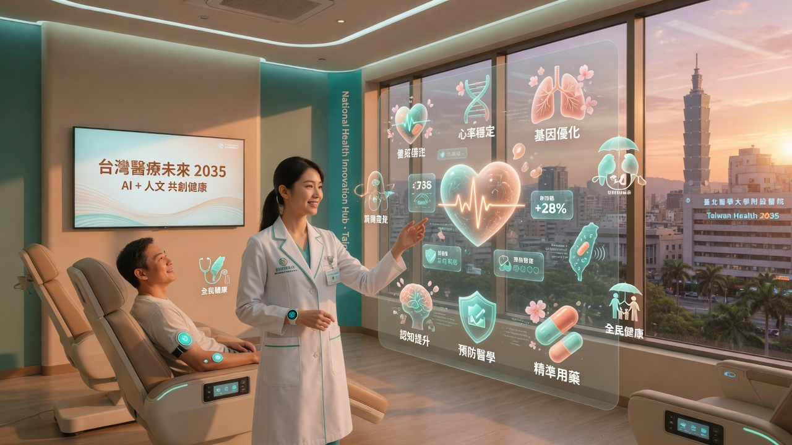
與 Hermes 攜手，補足耀聖，開啟安生智慧新篇章